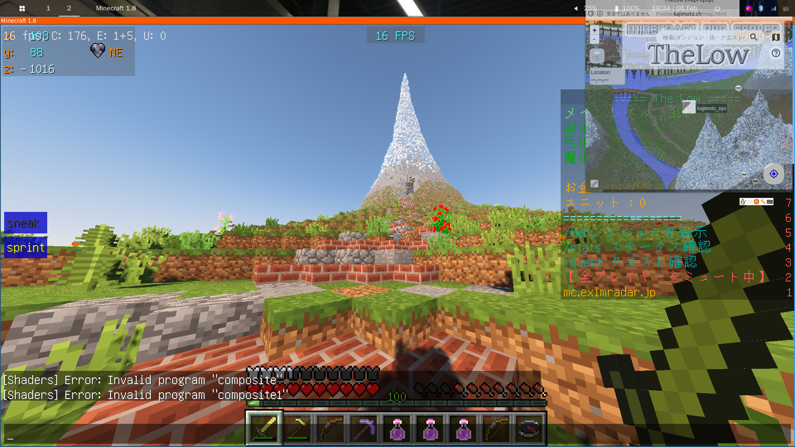

The Low [非公式] ポップアップガイド

このツールについて
minecraft(java版)のThelowサーバのDynMap(フィールドマップ)やWikiを小型のウィンドウで表示するツールです．
Minecraftの画面の上に重ねて表示することで，ミニマップのように使うことができます．
注意事項
- 本ツールは【非公式】です．(マップは公式から流用)
- 本システムの利用条件は本家(Thelow)を準拠致します．EXR-Network 利用規約をご確認下さい．
- 本プログラムはjavascriptを使用します．
- 一部機能は不完全なまま実装されています．ご了承下さい．
- 感想・意見・ご不明な点等は，お気軽に画面最下部のコメント欄へお願いします．(disqusのアカウント登録はしなくて結構です)
ツール起動
ポップアップガイド起動
実装済み機能
現在以下機能を実装済みです．
使い方・困ったとき
how-to-use.htmlへ
リンク
コメント欄(感想・機能提案等はお気軽にこちらへ！)